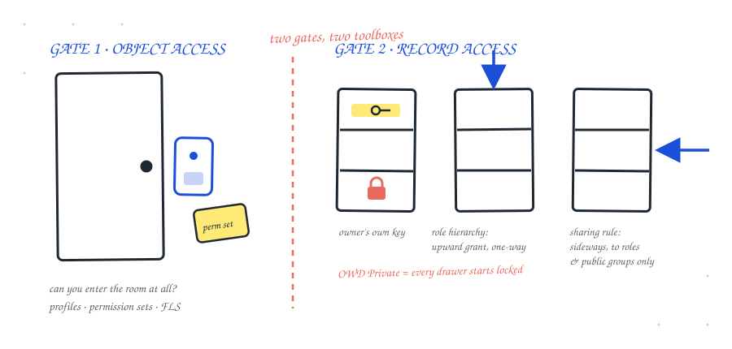

In six years of Salesforce work, the most common access bug I have debugged is not a bug at all. It is a mental-model problem: someone reaches for a permission set to make records visible, and it cannot ever do that job. I have seen it in tickets, in code reviews, and in interviews on both sides of the table.
This is the explanation I give teams when I set up the security layer of an org. It fits on one page, and once the model lands, record-access questions stop being guesswork and become a procedure.
Object access decides what you can do. Record access decides what you can see. They are two different gates, controlled by two completely different toolboxes, and no tool from one box can open the other gate.
two gates, two toolboxes. that's the whole trick.

Imagine every object in your org is a room. The Cases room, the Opportunities room, the room for your custom object. To even step inside, you need a keycard. That keycard is object permission: Create, Read, Edit, Delete, granted by profiles and permission sets.
Field-level security is part of this same gate. Being in the room does not mean every drawer label is readable to you. FLS decides which fields you can see and edit once you are inside.
Here is the trap that catches teams most often. A permission set can hand someone a keycard to the room. It can never, under any circumstance, decide which records inside the room they see. If the org-wide default is Private and no sharing reaches the user, a permission set with full Read on the object produces exactly one thing: an empty list view. The user is standing in the room staring at locked cabinets.
Inside the room, every record lives in a filing cabinet drawer, and drawers have their own keys. This is record access, and only four mechanisms hand out drawer keys:
Two details in that chain are where even experienced admins slip. First, sharing only ever opens drawers. There is no sharing mechanism that takes access away; the floor set by OWD is as locked as it gets. Second, the automatic upward grant has an exception: for custom objects there is a checkbox called Grant Access Using Hierarchies, on by default, and you can turn it off. For standard objects it is locked on. If an interviewer asks "does the manager always see the record," that checkbox is the answer they are fishing for.
Whenever I stand up the security layer of an org, I prove the model with real logins before writing a single sharing rule. In my CaseDesk project org: two test users, a support agent and her manager, Case set to Private.
Ten minutes of logging in as test users settles what an hour of reading documentation leaves fuzzy. I treat it as a required step, not an optional one.
When a user can't see a record, resist the urge to guess. Walk the gates in order:
A guess can be wrong. A procedure never is.
I think the reason these two gates get confused so often is that the tooling names are actively unhelpful. "Permission set" sounds like it should control everything, and the sharing tools are scattered across three different Setup pages. If the platform called them "object keycards" and "drawer keys" nobody would ever mix them up. Until Salesforce hires me to rename things, the sentence at the top of this note will have to do.